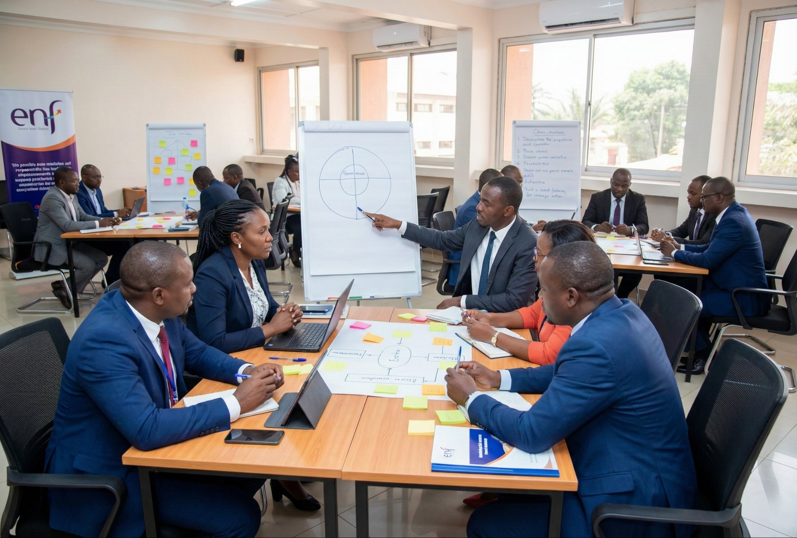

La modernisation de la gestion des finances publiques ne repose pas uniquement sur des textes et des outils : elle dépend surtout de la capacité des agents à exécuter correctement la dépense, à produire une information comptable fiable et à gérer la trésorerie selon des procédures harmonisées.
En République Démocratique du Congo, la mise en œuvre progressive de la chaîne déconcentrée de la dépense illustre cet enjeu : la réforme exige une appropriation simultanée du cadre procédural et des solutions logicielles mobilisées au poste de travail.

Une formation au croisement de la règle, du geste et de l'outil
C'est dans ce contexte que l'École Nationale des Finances, en collaboration avec les structures nationales impliquées dans la réforme et la chaîne comptable, a conduit une formation destinée aux utilisateurs finaux de la chaîne déconcentrée de la dépense et des outils associés.
La formation a été conçue pour relier la règle, le geste et l'outil. Elle a combiné des séquences centrées sur la réglementation et les procédures d'exécution de la dépense publique, et des séquences pratiques d'appropriation du logiciel C2D, afin de renforcer la maîtrise des opérations attendues et la conformité des traitements.
La transformation des finances publiques est un chantier humain avant d'être un chantier technique ; et une formation structurée, mesurée et connectée à l'exécution devient un instrument concret de réussite.
Un dispositif ciblé et mesuré
Le dispositif a ciblé un premier lot de ministères pilotes — Santé, Éducation, Développement rural, Infrastructures et Travaux Publics — et a réuni 72 participants, répartis en deux groupes, entre décembre 2025 et janvier 2026.
Au-delà du déroulement, un accent particulier a été mis sur le suivi : présence, appréciation des prestations et évaluation des participants. Cette logique de mesure permet d'identifier les acquis mais aussi les points de fragilité à traiter.

Enseignements pour le réseau RESIPIF
Plusieurs enseignements ressortent de cette expérience, utiles pour les instituts membres du RESIPIF :
- Former au moment où la réforme « touche le terrain »
- Enseigner ensemble procédures et outils
- Conditionner les attestations à un seuil minimum de compétences
- Prévoir un accompagnement post-formation
- Renforcer les rappels d'éthique et de responsabilité administrative
Pour l'ENF, l'enjeu est désormais de consolider ce modèle : planification, standardisation des contenus et évaluation de l'impact, afin d'accompagner durablement le déploiement des réformes.